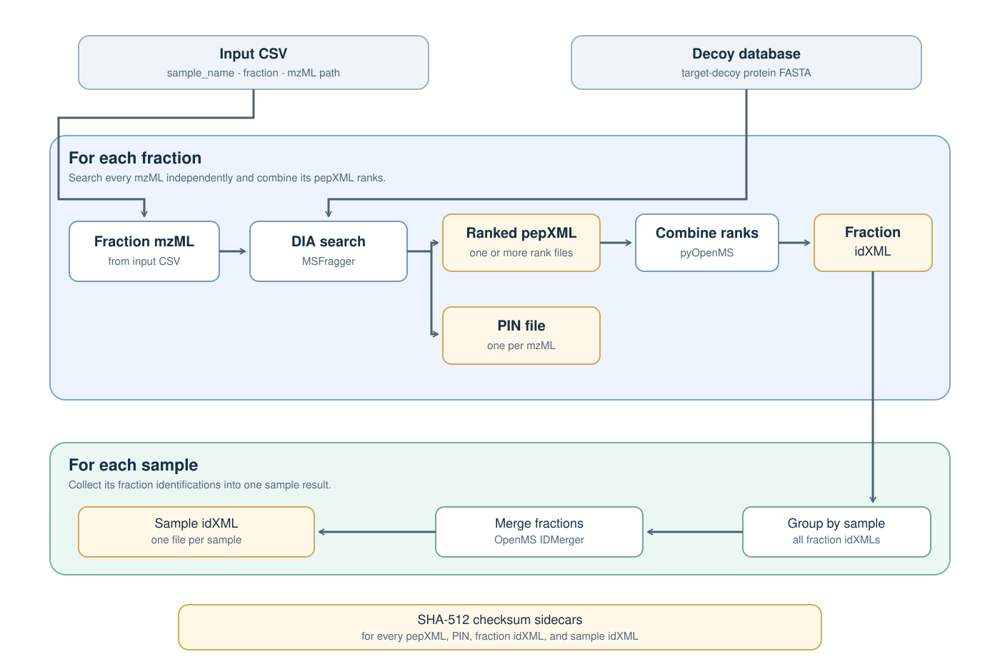

Database search
MSFragger-DIA searches each mzML acquisition against the target-decoy FASTA. It identifies candidate peptide-spectrum matches (PSMs), which are scored and filtered in the validation step.

Open the original flowchart at full size.

How it works
- Write a native MSFragger parameter file from your search settings.
- Search each acquisition or fraction independently, producing pepXML and PIN results.
- Convert the reported peptide ranks to idXML and combine the ranks for each acquisition.
- Merge fractions sharing the same
sample_nameinto a sample-level identification file for validation.
The search retains candidate matches for statistical validation. A search hit is not yet an accepted identification.
Inputs and outputs
Inputs are the prepared mzML files, your target-decoy FASTA, and the separately obtained MSFragger JAR. SpectroMesa-DIA supplies all three from earlier steps and the shared configuration.
Outputs include per-acquisition pepXML and PIN files and one combined idXML per sample. These provide the identification evidence for MSBooster and Percolator.
Sample names define the validation unit
Fractions with the same sample_name are combined before sample-level FDR estimation. Give technical replicates distinct sample names when you want separate validation and quantitation columns. See Preparing inputs.
Search settings
Mass tolerances below are expressed in ppm by default. Review digestion and modifications against your sample preparation; the configuration guide explains the usual choices.
The tables show SpectroMesa-DIA defaults. One explicit template override is worth checking: use_topN_peaks is 150 in the supplied run template, while the underlying default is 1000. A run made from that template therefore uses 150 unless you change it.
Parameter reference
Use the search_ProteomicDIA block inside params in your run configuration. Names beginning with MSFragger. belong inside its nested MSFragger block. Values below describe this step as used by SpectroMesa-DIA. Settings marked automatically supplied do not need to be repeated.
Analysis settings
| Parameter | Type | Default / supplied value | Meaning |
|---|---|---|---|
save_intermediate_files |
Boolean | false | Publish additional intermediate files for inspection. Final outputs and execution logs are retained independently. |
Mass tolerances and precursor handling
| Parameter | Type | Default / supplied value | Meaning |
|---|---|---|---|
MSFragger.precursor_mass_lower |
Number | -25 | Lower precursor mass search bound |
MSFragger.precursor_mass_upper |
Number | 25 | Upper precursor mass search bound |
MSFragger.precursor_mass_units |
Number | ppm | Mass unit for this tolerance. Leave unchanged when specifying tolerances in ppm. |
MSFragger.precursor_true_tolerance |
Number | 4 | True precursor mass tolerance for calibration |
MSFragger.precursor_true_units |
Number | ppm | Mass unit for this tolerance. Leave unchanged when specifying tolerances in ppm. |
MSFragger.fragment_mass_tolerance |
Number | 50 | Fragment mass tolerance |
MSFragger.fragment_mass_units |
Number | ppm | Mass unit for this tolerance. Leave unchanged when specifying tolerances in ppm. |
MSFragger.calibrate_mass |
Number | 2 | Mass calibration and optimization mode. Choices: 0, 1, 2, 4. |
MSFragger.deisotope |
Number | 1 | Peak deisotoping mode. Choices: 0, 1, 2. |
MSFragger.deneutralloss |
Number | 1 | Remove neutral-loss peaks when enabled. Choices: 0, 1. |
MSFragger.isotope_error |
Text | 0/1/2 | Slash-separated precursor isotope errors |
MSFragger.precursor_mass_mode |
Text | selected | Precursor mass interpretation. Choices: isolated, selected, corrected. |
MSFragger.precursor_charge |
Text | 1 4 | Space-separated minimum and maximum precursor charges; used when override_charge is 1 |
MSFragger.override_charge |
Number | 0 | Use precursor_charge range instead of charges recorded in the spectra. Choices: 0, 1. |
MSFragger.require_precursor |
Number | 1 | Require precursor evidence for DIA PSMs. Choices: 0, 1. |
Digestion and modifications
| Parameter | Type | Default / supplied value | Meaning |
|---|---|---|---|
MSFragger.search_enzyme_name_1 |
Text | stricttrypsin | Primary digestion enzyme name |
MSFragger.search_enzyme_cut_1 |
Text | KR | Primary enzyme cleavage residues |
MSFragger.search_enzyme_nocut_1 |
Text | Empty | Residues that prevent primary enzyme cleavage |
MSFragger.search_enzyme_sense_1 |
Text | C | Primary enzyme cleavage terminus. Choices: C, N. |
MSFragger.allowed_missed_cleavage_1 |
Number | 2 | Maximum missed cleavages for primary enzyme |
MSFragger.num_enzyme_termini |
Number | 2 | Required enzymatic peptide termini. Choices: 0, 1, 2. |
MSFragger.clip_nTerm_M |
Number | 1 | Allow protein N-terminal methionine clipping. Choices: 0, 1. |
MSFragger.variable_mod_01 |
Text | 15.9949 M 3 | Methionine oxidation by default. Native MSFragger modification syntax; an empty string disables it. |
MSFragger.variable_mod_02 |
Text | 42.0106 [^ 1 | Protein N-terminal acetylation by default. Native MSFragger modification syntax; an empty string disables it. |
MSFragger.allow_multiple_variable_mods_on_residue |
Number | 0 | Allow multiple variable modifications on one residue. Choices: 0, 1. |
MSFragger.max_variable_mods_per_peptide |
Number | 3 | Maximum variable modifications per peptide |
MSFragger.digest_min_length |
Number | 7 | Minimum in-silico peptide length |
MSFragger.digest_max_length |
Number | 50 | Maximum in-silico peptide length |
MSFragger.digest_mass_range |
Text | 500.0 5000.0 | Space-separated minimum and maximum peptide mass in Da |
MSFragger.add_C_cysteine |
Number | 57.02146 | Fixed mass added to cysteine residues |
Spectrum filtering and search output
| Parameter | Type | Default / supplied value | Meaning |
|---|---|---|---|
MSFragger.data_type |
Number | 1 | DIA acquisition mode; fixed to 1 for this pipeline |
MSFragger.num_threads |
Number | 0 | Thread count used by MSFragger. Leave 0 to use the CPUs made available to the search task. |
MSFragger.reuse_dia_fragment_peaks |
Number | 0 | Permit fragment peaks to match multiple peptides. Choices: 0, 1. |
MSFragger.fragment_ion_series |
Text | b,y | Comma-separated fragment ion series |
MSFragger.output_format |
Text | pepXML_pin | Write pepXML and PIN for downstream processing. Choices: pepXML_pin. |
MSFragger.output_report_topN |
Number | 5 | Number of PSMs reported per spectrum |
MSFragger.output_max_expect |
Number | 50 | Maximum expectation value for reported PSMs |
MSFragger.max_fragment_charge |
Number | 2 | Maximum theoretical fragment charge |
MSFragger.minimum_peaks |
Number | 15 | Minimum experimental spectrum peak count |
MSFragger.use_topN_peaks |
Number | 1000; template: 150 | Maximum experimental peaks retained per spectrum. The run template sets 150; the underlying SpectroMesa-DIA default is 1000. |
MSFragger.min_matched_fragments |
Number | 4 | Minimum matched fragments for a reported PSM |
Software and containers
These defaults record the software environment. When replacing an image, check its compatibility with the workflow; a version label alone does not guarantee the required tools are installed.
| Parameter | Type | Default / supplied value | Meaning |
|---|---|---|---|
docker_container_registry |
Text | ghcr.io/theboutroslab | Registry setting retained by the individual pipeline; explicit container-image settings determine the images actually run. |
docker_image_java |
Text | eclipse-temurin:17-jre-jammy | Container image used for java. Change only when using a compatible replacement image. |
openms_version |
Text | 3.5.0 | Version tag used for this tool’s output naming and default container selection. |
docker_image_openms |
Text | ghcr.io/theboutroslab/openms-thirdparty:3.5.0 | Container image used for openms. Change only when using a compatible replacement image. |
pyopenms_version |
Text | 3.5.0 | Version tag used for this tool’s output naming and default container selection. |
docker_image_pyopenms |
Text | ghcr.io/theboutroslab/pyopenms:3.5.0 | Container image used for pyopenms. Change only when using a compatible replacement image. |
Automatically supplied settings
| Parameter | Type | Default / supplied value | Meaning |
|---|---|---|---|
dataset_id |
Text | Shared dataset_id | Analysis name used to organize and name outputs. |
output_dir |
Path | Assigned within the analysis output | Destination for this step. Set the shared output_dir for the complete analysis. |
input_csv |
Path | Generated mzML manifest | CSV with sample_name,fraction,mzML columns (or legacy sample_name,mzML for single fractions) |
msfragger_executable |
Path | Shared msfragger_executable | Path to the separately obtained MSFragger JAR |
decoy_database |
Path | Shared decoy_database | Target-decoy protein FASTA used for the MSFragger search |
decoy_prefix |
Text | Shared decoy_string | Decoy accession prefix; must match the shared target-decoy database. |
Computing and temporary files
The shared parameter reference describes CPU, memory, work-directory, and container-cache settings. This pipeline declares: apptainer_library, apptainer_cache, singularity_library, singularity_cache, base_resource_update, resource_allocation_profile_tag, max_cpus, max_memory, min_cpus, min_memory.
The tables were checked against the individual pipeline configuration and the SpectroMesa-DIA settings that select this workflow.
Related steps
Overview · Shared parameters · Configuring an analysis